７次元バイナリチェス
これは 2x2x2x2x2x2x2 のボード上での 7 次元のチェスです。
7 Dimensional Binary Chess
This is a 7 dimensional chess on a 2x2x2x2x2x2x2 board.
七维二进制国际象棋
这是在 2x2x2x2x2x2x2 棋盘上进行的七维国际象棋。
7차원 바이너리 체스
2x2x2x2x2x2x2 보드에서 하는 7차원 체스입니다.
Ajedrez binario de 7 dimensiones
Es un ajedrez de 7 dimensiones en un tablero de 2x2x2x2x2x2x2.
表示のよみかた:
・ が KING、

が BISHOP、 が ROOK で、駒の種類を表します。
How to read the board:
・ is KING, is BISHOP and is ROOK. They show the kinds of pieces.
・The fill color of the piece is the color of its player. For example, is the white (first player) king, and is the black (second player) king.
・The digits next to a piece show its location. "0000000" means that the white king is at (0,0,0,0,0,0,0). 0 is drawn as a white cell and 1 as a black cell.
・distance is the number of bits that differ from the viewpoint. Pieces with the same distance are listed in the same column.
Moves of pieces:
・ ROOK moves in 1 dimension. (It can move to the location with 1 bit flipped.)
・ BISHOP moves diagonally in 2 dimensions. (It can move to the location with 2 bits flipped.)
・ KING moves diagonally in 1 to 3 dimensions. (It can move to the location with 1 to 3 bits flipped.)
Mouse operation:
・Click your piece to select it. The selected piece is highlighted in yellow, and the opponent pieces it can capture are highlighted in red. The destination candidates are drawn faintly.
・Click a red piece or a faint candidate to move there. Click the selected piece again to cancel the selection.
・Double click a white piece to move the viewpoint so that its location becomes distance = 0.
・Double click a black piece to move the viewpoint so that its location becomes distance = 7.
Win:
・You win when you capture the opponent's KING.
棋盘的读法:
・ 是 KING， 是 BISHOP， 是 ROOK，表示棋子的种类。
・棋子的填充颜色就是玩家的颜色。例如， 是白方(先手)的王， 是黑方(后手)的王。
・旁边的数字表示棋子的位置。 "0000000" 表示白方的王在坐标 (0,0,0,0,0,0,0)。0 画成白格，1 画成黑格。
・distance 是与视点位置不同的位数。distance 相同的棋子排在同一列。
棋子的走法:
・ ROOK 沿 1 个维度移动。(可以移动到翻转 1 位的位置)
・ BISHOP 沿 2 个维度斜向移动。(可以移动到翻转 2 位的位置)
・ KING 沿 1～3 个维度斜向移动。(可以移动到翻转 1～3 位的位置)
鼠标操作:
・点击自己的棋子即可选中。选中的棋子显示为黄色，它能吃掉的对方棋子显示为红色。可移动的位置会淡淡地显示出来。
・点击红色的棋子或淡色的位置，即可移动到那里。再次点击选中的棋子可取消选择。
・双击白方棋子，视点会移动，使它的位置成为 distance = 0。
・双击黑方棋子，视点会移动，使它的位置成为 distance = 7。
胜负:
・吃掉对方的 KING 即获胜。
보드 읽는 법:
・은 KING, 은 BISHOP, 은 ROOK으로, 말의 종류를 나타냅니다.
・말을 칠한 색이 플레이어의 색입니다. 예를 들어 은 백(선수)의 킹, 은 흑(후수)의 킹입니다.
・옆의 숫자는 그 말의 위치입니다. "0000000"은 좌표 (0,0,0,0,0,0,0)에 백의 킹이 있다는 뜻입니다. 0은 흰 칸, 1은 검은 칸으로 표시합니다.
・distance는 시점 위치와 다른 비트의 개수입니다. distance가 같은 말은 같은 열에 놓입니다.
말의 움직임:
・ ROOK은 1차원으로 이동합니다. (1비트를 뒤집은 위치로 이동할 수 있습니다)
・ BISHOP은 2차원 대각선으로 이동합니다. (2비트를 뒤집은 위치로 이동할 수 있습니다)
・ KING은 1~3차원 대각선으로 이동합니다. (1~3비트를 뒤집은 위치로 이동할 수 있습니다)
마우스 조작:
・자기 말을 클릭하면 선택됩니다. 선택한 말은 노란색, 그 말로 잡을 수 있는 상대 말은 빨간색으로 표시됩니다. 이동할 수 있는 칸은 흐리게 표시됩니다.
・빨간 말이나 흐린 칸을 클릭하면 그곳으로 이동합니다. 선택한 말을 다시 클릭하면 선택이 취소됩니다.
・백의 말을 더블클릭하면 그 위치가 distance = 0이 되도록 시점이 이동합니다.
・흑의 말을 더블클릭하면 그 위치가 distance = 7이 되도록 시점이 이동합니다.
승패:
・상대의 KING을 잡으면 이깁니다.
Cómo leer el tablero:
・ es KING (rey), es BISHOP (alfil) y es ROOK (torre). Indican los tipos de piezas.
・El color de relleno de la pieza es el color de su jugador. Por ejemplo, es el rey blanco (primer jugador) y es el rey negro (segundo jugador).
・Los dígitos junto a la pieza indican su posición. "0000000" significa que el rey blanco está en (0,0,0,0,0,0,0). El 0 se dibuja como una casilla blanca y el 1 como una casilla negra.
・distance es el número de bits que difieren del punto de vista. Las piezas con la misma distance están en la misma columna.
Movimientos de las piezas:
・ ROOK se mueve en 1 dimensión. (Puede moverse a la posición con 1 bit invertido.)
・ BISHOP se mueve en diagonal en 2 dimensiones. (Puede moverse a la posición con 2 bits invertidos.)
・ KING se mueve en diagonal en 1 a 3 dimensiones. (Puede moverse a la posición con 1 a 3 bits invertidos.)
Manejo con el ratón:
・Haz clic en una pieza tuya para seleccionarla. La pieza seleccionada se resalta en amarillo y las piezas rivales que puede capturar, en rojo. Las casillas de destino posibles se dibujan tenues.
・Haz clic en una pieza roja o en un destino tenue para moverla allí. Haz clic otra vez en la pieza seleccionada para cancelar la selección.
・Haz doble clic en una pieza blanca para mover el punto de vista de modo que su posición quede en distance = 0.
・Haz doble clic en una pieza negra para mover el punto de vista de modo que su posición quede en distance = 7.
Victoria:
・Ganas cuando capturas el KING del rival.